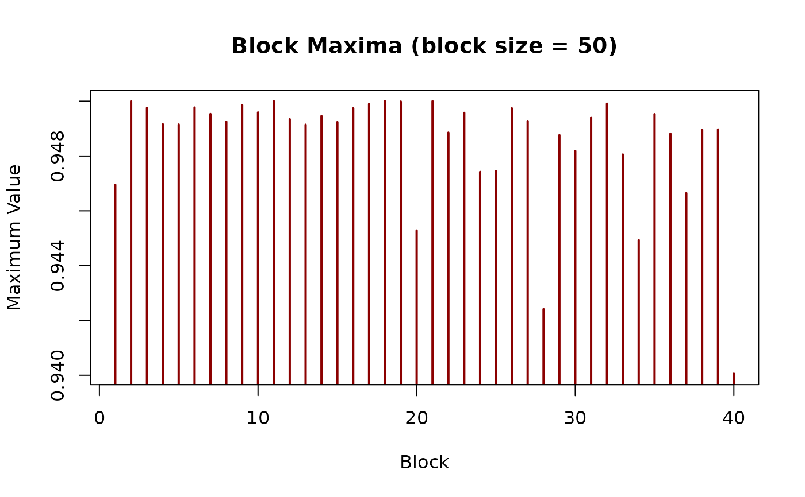
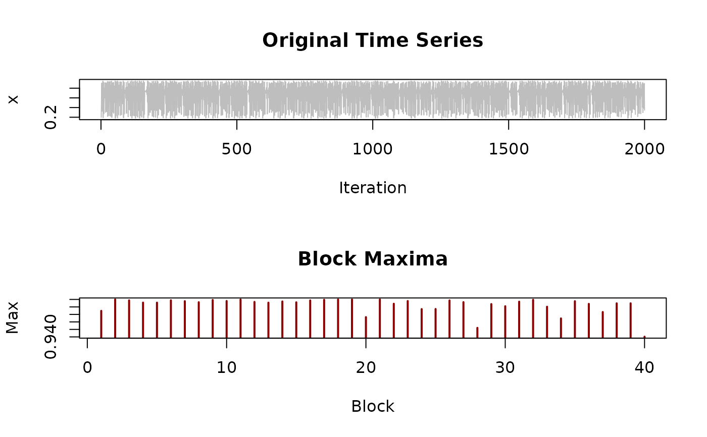
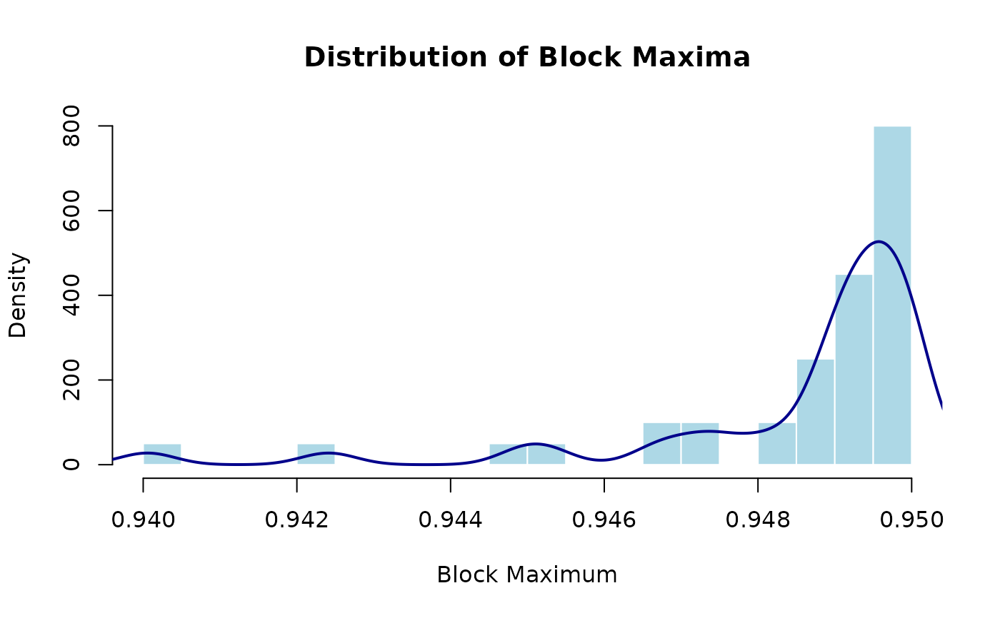

Divides a time series into non-overlapping blocks of equal size and extracts the maximum value from each block. This is a fundamental method in extreme value theory for analyzing the distribution of extreme events.
Arguments
- x
Numeric vector. The time series from which to extract block maxima. Should not contain NA or infinite values. Typical length: at least 20 × block_size for reliable statistical analysis.
- block_size
Integer. Size of each block. Must be positive and should be much smaller than length(x). Recommended: - Start with length(x) / 50 and adjust based on diagnostics - Ensure at least 20 blocks: block_size ≤ length(x) / 20 - For chaotic systems with known mixing time, use multiples of mixing time
Value
Numeric vector of length floor(length(x) / block_size) containing the maximum value from each block. The vector has length k where k is the number of complete blocks. Any remaining observations (if length(x) is not divisible by block_size) are discarded.
The returned maxima can be used with fit_gev to estimate
GEV parameters and quantify extreme value behavior.
Details
## Overview The block maxima method is one of two classical approaches in extreme value theory (EVT), along with peaks-over-threshold (POT). It transforms a time series of length n into approximately n/block_size maxima, which under appropriate conditions converge to a Generalized Extreme Value (GEV) distribution.
## When to Use Block Maxima Block maxima is appropriate when: - You want to analyze extremes over fixed time periods (e.g., annual maxima) - Your data naturally divides into meaningful blocks (seasons, years, cycles) - You prefer working with fewer, more independent observations - Theoretical conditions for GEV approximation are met
## Comparison to Peaks-Over-Threshold **Advantages**: - Simpler conceptually - Automatically provides approximately independent observations - Well-established theory and inference procedures
**Disadvantages**: - Less efficient: discards all non-maximal values in each block - Requires choosing block size (bias-variance tradeoff) - May not be suitable for short time series
Generally, POT is preferred when you have long time series and want to extract more information from the data.
## Choosing Block Size Block size selection involves a tradeoff: - **Too small**: Maxima may not be independent, GEV approximation poor - **Too large**: Few blocks, high variance in estimates
Rules of thumb: - At least 20-50 blocks for reliable estimation - Blocks should span a "natural" time scale of the system - For chaotic systems: consider the correlation time or Lyapunov timescale
Mathematical Background
Let \(X_1, X_2, \ldots, X_n\) be a stationary sequence and divide it into k blocks of size m (so n ≈ km). The block maxima are: $$M_i = \max\{X_{(i-1)m+1}, \ldots, X_{im}\}, \quad i = 1,\ldots,k$$
Under appropriate mixing and regularity conditions, as m → ∞, the distribution of (normalized) \(M_i\) converges to the GEV distribution: $$G(z) = \exp\{-(1 + \xi z)^{-1/\xi}\}$$ where \(\xi\) is the shape parameter.
For dependent sequences (like chaotic systems), the extremal index \(\theta\) adjusts the limiting distribution to account for clustering.
References
Coles, S. (2001). *An Introduction to Statistical Modeling of Extreme Values*. Springer. Chapter 3. doi:10.1007/978-1-4471-3675-0
Leadbetter, M. R., Lindgren, G., & Rootzén, H. (1983). *Extremes and Related Properties of Random Sequences and Processes*. Springer.
See also
fit_gev to fit the GEV distribution to block maxima,
exceedances for the alternative POT approach,
threshold_diagnostics for diagnostic plots.
See vignette("block-maxima-vs-pot-henon") for a detailed comparison
of block maxima and POT methods.
Other extreme value functions:
fit_gev()
Examples
# Simulate chaotic time series
series <- simulate_logistic_map(n = 2000, r = 3.8, x0 = 0.2)
# Extract block maxima with block size 50
bm <- block_maxima(series, block_size = 50)
length(bm) # Should be 40 blocks
#> [1] 40
# Visualize the block maxima
plot(bm, type = "h", lwd = 2, col = "darkred",
main = "Block Maxima (block size = 50)",
xlab = "Block", ylab = "Maximum Value")

# Compare to original series
par(mfrow = c(2, 1))
plot(series, type = "l", col = "gray", main = "Original Time Series",
xlab = "Iteration", ylab = "x")
plot(bm, type = "h", lwd = 2, col = "darkred",
main = "Block Maxima", xlab = "Block", ylab = "Max")

par(mfrow = c(1, 1))
# Distribution of block maxima
hist(bm, breaks = 15, probability = TRUE, col = "lightblue",
border = "white", main = "Distribution of Block Maxima",
xlab = "Block Maximum")
lines(density(bm), col = "darkblue", lwd = 2)

# Effect of block size on number of maxima
for (bs in c(25, 50, 100, 200)) {
bm_temp <- block_maxima(series, bs)
cat("Block size", bs, ": ", length(bm_temp), "maxima\n")
}
#> Block size 25 : 80 maxima
#> Block size 50 : 40 maxima
#> Block size 100 : 20 maxima
#> Block size 200 : 10 maxima
# \donttest{
# Fit GEV distribution to block maxima
if (requireNamespace("evd", quietly = TRUE)) {
gev_fit <- fit_gev(bm)
print(gev_fit)
}
#> <chaotic_model>
#> Model: gev
#> Method: evd::fgev
#> Parameters:
#> loc scale shape
#> 0.948185 0.003620 -1.353400
# }